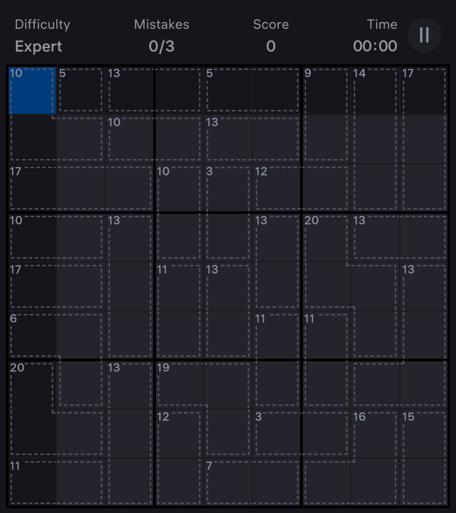

Here are a few of my hobbies!
This section takes a more relaxed and informal tone than the rest of my site, but I hope it offers a clearer picture of who I am beyond work. It’s also a space for me to practice my HTML skills. Who knows — if you look closely, you might even notice that I bring the same level of effort and dedication to my hobbies as I do to my professional pursuits.
Sudoku
Sudoku is a passion I've reconnected with recently. Lately, I've explored new variations of the puzzle, such as Killer Sudoku, which adds a mathematical twist. In this version, you can start with no numbers given at all, only the sums of small groups of cells to guide you.
My first solve of these numberless puzzles took over an hour, but with practice, I've brought my best time to about ten minutes. It's a fun way to challenge my problem-solving skills and keep my mind sharp.
Triathlon
Triathlon has become my favorite sports. I find the training incredibly rewarding! There's a clear connection between the effort I put in and the improvements I see in my fitness. I enjoy pushing my limits during races as a way to challenge myself and prove what I'm capable of. While I'm proud of all my races, my favorite is the personal triathlon I complete every year on my birthday.
I started this tradition in 2024 at age 19 and plan to continue it for as long as I can. The format is simple. Suppose a is my age. I swim a*100m, bike a*5km, and run a*1km. Since these distances don't match any official race, I complete it on my own, which adds an extra level of challenge and meaning.


Backpacking & Canoe-Camping
In 2024, I went on my first backpacking trip, and it was an unforgettable experience. We hiked 30 km over three days with heavy packs through the crisp October weather in Frontenac Park, Ontario. I quickly fell in love with the trails and the peacefulness of nature.
In 2025, I planned to go backpacking again, but a stress fracture forced a change of plans. Instead, I brough my canoe to Kawartha Highlands and went canoe-camping. It turned out to be an equally rewarding way to explore the outdoors, covering 33.5km! I even got the oportunity to have my own private island for one night! Both activities have become important parts of how I connect with nature.


Trips
In 2025, I took my first trip abroad, to Portugal! I absolutely loved it. My girlfriend and I focused on meaningful experiences throughout the two week adventure. I hiked a 300m mountain to a castle in Sintra, walked along the stunning cliffs in Lagos, kayaked in its coastal waters, biked 80 km across rough terrain, and even learned to surf near Porto.
That trip sparked a passion for travel, and I'm excited to have more meaningful experiences around the world in the years to come.

Reading
Reading is another passion I've recently reconnected with. I realized I was spending too much time on my phone and found that I'm much more focused and motivated when I leave it behind.
To break that habit, I turned back to something I loved growing up, getting lost in books. It's been a great way to unwind, learn, and stay present, and I've been steadily building it back into my routine.